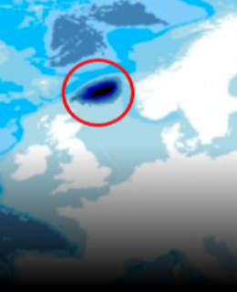
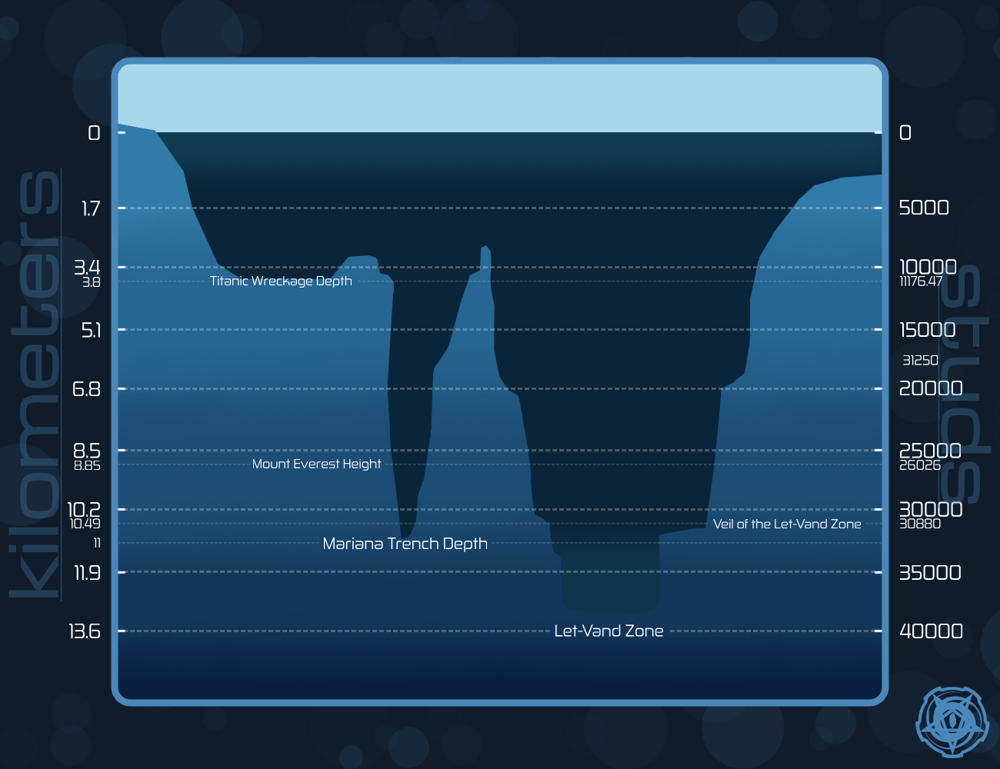

Z-1, кодовое имя «Зона Лет-Ванд» ⸺ область, в которой расположен Хадальный Тайный Объект. Сотрудники обнаружили её в 1961 году после того, как грузовое судно класса B «█████████» затонуло во время сильного шторма в Норвежском море на пути в Восточную Исландию.
Во время операции по подъёму судна команда обнаружила ранее не нанесённую на карты глубоководную впадину, которая спускается на глубину 38 235 студий, что примерно на 6 075 студий глубже, чем Бездна Челленджера. На отметке 30 880 студий они нашли явление, при котором давление воды резко меняется с примерно 1050 атмосфер при 0,6°C до атмосферного давления на уровне моря (~1 атмосфера) при 10°C. Между этими слоями находится феномен, аналогичный гидродинамическому звуковому барьеру, который необходимо преодолеть на экстремально высокой скорости, чтобы попасть в область под ним. Этот порог, известный как «Покров зоны Лет-Ванд», отмечает границу между обычным океаном сверху и аномальным регионом снизу.
Незащищённые биологические организмы не могут пересечь покров, так как он служит уплотнителем от океана сверху, и его невозможно преодолеть, не превысив скорость 4,8 Маха (приблизительно 4 820 студий/с).
Если какой-либо организм пробьёт покров, то резкие перепады давления вызовут немедленную имплозию без специального оборудования. Подводные лодки Urbanshade используют корпуса из мартенситно-стареющей стали и реактивные двигатели, способные развивать скорость до 5,3 Маха (около 5 350 студий/с), чтобы пронзить покров.
После подтверждения открытия сотрудники немедленно засекретили этот район и подавили все связанные с ним данные, прежде чем картографы успели обновить мировые карты. К концу сентября 1961 года исследовательские группы завершили батиметрические карты зоны Лет-Ванд. К концу декабря начались первые пилотируемые экспедиции недавно сформированного Отдела Экспедиций по изучению этого района. Строительство Хадального Тайного Объекта началось на следующий год и было завершено в 1974 году.
С момента своего основания Хадальный Тайный Объект зависит от непрерывных поставок с материковой Европы. Хотя с годами объект стал всё более самодостаточным (ожидается 75% самообеспеченности к 2050 году), он по-прежнему зависит от внешней поддержки для своих повседневных операций. Для удовлетворения этих потребностей Urbanshade создала порты вдоль побережий Исландии, Шотландии, Норвегии и Дании. Большинство этих портов интегрированы в гражданскую морскую инфраструктуру, работая под видом коммерческой или рыболовной деятельности. Другие служат специализированными военными базами, скрытыми внутри природных береговых образований, таких как пещеры и прибрежные бухты.
Стратегические и практические факторы сделали зону Лет-Ванд оптимальным местом для Хадального Тайного Объекта. Среда с низким давлением значительно снижает стоимость глубоководного строительства, устраняя необходимость в тяжёлых структурных укреплениях или водолазных камерах. Водолазы могут плавать и работать, используя только базовое водолазное снаряжение, не опасаясь декомпрессионной болезни или переохлаждения. Её изолированное расположение также защищает объект от спутниковых снимков и внешних морских судов, позволяя проводить операции без ограничений со стороны регулирующих органов.

